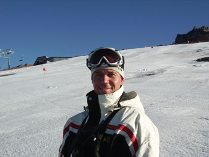

Meet the Director/Head Coach
I, Paul Rozsypal, was born in Brno, Czech Republic in 1978 and came to the United States
in 1984 with my parents; we headed straight to the beautiful Rocky Mountains of Colorado.
My parents stem from a European ski racing background and wanted to raise me in this
opportunistic setting.
Skis were first strapped to my feet in Karlov, Czech Republic at age two and by age
six I participated in my first race in Winter Park, Colorado where I trained and raced
competitively for five seasons and captured three gold medals in the Junior Olympics just
prior to switching over to the Loveland Racing Club; there I spent three seasons. In 1992
the Loveland Racing Club was named Team Lightning as the fastest junior program in the
Western Region.
As my High School years approached I was accepted to the Lowell Whiteman School in
Steamboat Springs, Colorado, which is a private boarding school and ski academy where I
raced under the world-class structure of the Steamboat Springs Winter Sports Club. I took
part in a rigorous, college-prep academic program while training and racing at a full-time
pace.
After graduating from the Whiteman School I headed straight to the University of
Colorado at Boulder where I raced for my first year. I majored in English & History and
continued working on a minor in Business Management.
During my junior year at CU in 1999 I took over the "Development Ski Team" and
restructured it into an Independent Organization. This is now the beginning of my 12th
season with the program and it has turned into the largest USCSA Alpine team in the country
as of 2008. The process has been a memorable journey and a challenge that has taught me
valuable lessons. I look forward to everything that lies ahead.
After being in the ski racing industry for most of my life, I have learned many
leadership traits, values, and techniques from some of the best teachers and coaches that
have come along. I hope to keep spreading this wealth of knowledge onto my athletes as
well as being a role-model and mentor to the ones I work with.
Hobbies:
Reading, writing, mountain/road biking, windsurfing, tennis, roller hockey, camping,
hiking, and world traveling.